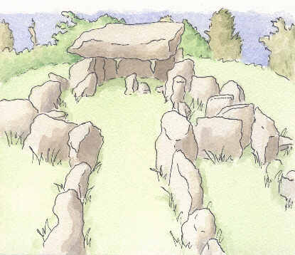

Dolmens in Jersey - Dolmens en Jèrri
On these pages you will find some pictures of dolmens in Jersey
Sus ches pages ou trouv'thez tchiques portraits dé dolmens en Jèrri

En Jèrriais, lé mot "dolmen" et lé mot "pouquelée" ou "pouquelaye" (ou "pouclée") sîngnifient un monument préhistorique. Les gens criyaient qu'ches monuments avaient 'té bâtis par les p'tits faîtchieaux tchi portaient les pièrres dans lus d'vantchieaux.

Les longue pièrres 'taient nommées des "blianches femmes" ou des "blianches danmes". Nou peut vaie ches noms dans les noms d'cèrtaines rues en Jèrri.


All pictures by Geraint Jennings
Touos les portraits par Geraint Jennings
For more information, see my books on prehistoric Jersey:
Pouor acouo d'l'înformâtion, viyiz mes livres entouor Jèrri dans la préhistouaithe:
R'tou à la page d'siez-mé | Back to home page